Neurovascular Supply of the Proximal Upper Extremity
- One artery, renamed at landmarks: subclavian → (lateral border of the 1st rib) axillary → (inferior border of teres major) brachial → (cubital fossa) radial laterally and ulnar medially.
- The axillary artery has three parts, defined by pectoralis minor. Its branches, with the subclavian's suprascapular and dorsal scapular arteries, form the scapular anastomosis, which keeps the joint perfused whatever position kinks a vessel. Know that it exists and why; you don't need every name.
- The brachial artery runs medial to biceps. The BP cuff compresses it, and mid-shaft and supracondylar humeral fractures can injure it. Its profunda brachii branch runs with the radial nerve in the radial groove.
- Veins: cephalic up the lateral arm into the deltopectoral triangle; basilic up the medial arm, diving deep; the median cubital joins them in the cubital fossa (blood draws). The deep veins are paired and run with the arteries.
- In the arm, only two nerves supply muscle: musculocutaneous (pierces coracobrachialis; all of the anterior compartment; ends as the lateral cutaneous nerve of the forearm) and radial (all of the posterior compartment). Median and ulnar supply nothing in the arm; the ulnar passes behind the medial epicondyle.
- Mid-shaft humeral fracture: worry first about bleeding (brachial or profunda brachii artery), second about the radial nerve. Axillary nerve skin is the “sergeant's patch” over the deltoid. The biceps reflex tests C5–C6.
Learning Objectives
- Identify the important functional anatomy of the upper extremity, as it pertains to clinical presentations of arm pathology.
- Determine the sensory and motor loss anticipated with injuries to specific sites of the plexus (the roots and the terminal branches).
- Identify the major arteries and veins of the upper extremity and their relationships to surrounding structures.
- Create a differential diagnosis and management plan for upper extremity complaints: numbness, weakness, pain and loss of range of motion.
- Describe the anatomic basis of common elbow and arm complaints (medial and lateral epicondylitis, distal biceps rupture, olecranon bursitis, ulnar neuropathy, arthritis, subluxation/dislocation, UCL injury) and outline their diagnosis and management.
Dr. Charys Martin, 80 minutes: vascular supply (11 min), nerve supply (18 min), then a 10-question clinical quiz on the shoulder. The elbow objectives are taught in 8.5, 8.6 and 8.7. This module and Muscles of the Arm are the prep for the Proximal Upper Extremity Part II lab.
Vascular Supply
Dr. Martin's first recording.
The Arterial Tree
The whole limb runs off one artery, which changes its name at each landmark. The subclavian comes off the brachiocephalic trunk on the right and straight off the aortic arch on the left.
| Artery | Starts at | Ends at |
|---|---|---|
| Subclavian | Brachiocephalic trunk (R) / aortic arch (L) | Lateral border of the 1st rib |
| Axillary | Lateral border of the 1st rib | Inferior border of teres major |
| Brachial | Inferior border of teres major | Cubital fossa (front of the elbow) |
| Radial / ulnar | Cubital fossa | Run down the radial (lateral) and ulnar (medial) sides of the forearm |
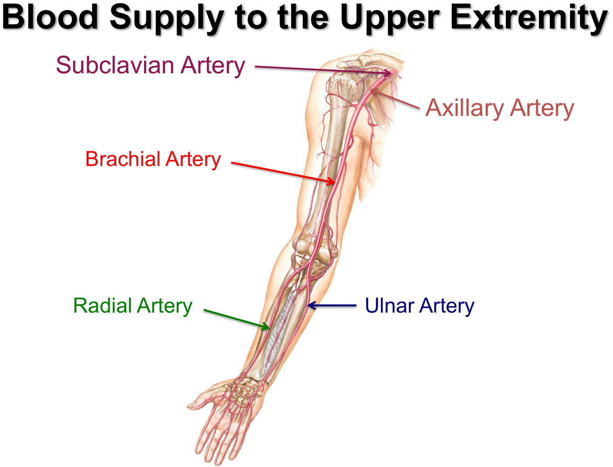
The whole tree in one picture. Slide from the deck.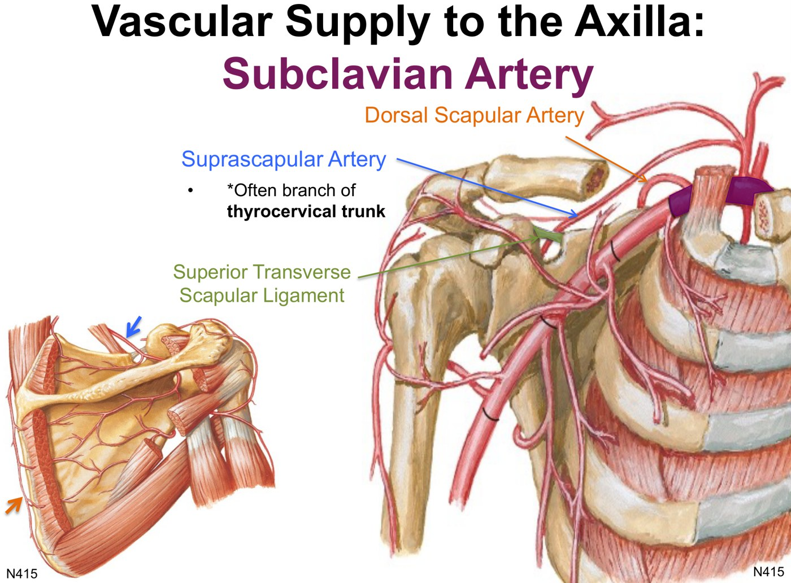
Subclavian branches to the shoulder. Slide from the deck.| Subclavian branch | Course and supply |
|---|---|
| Dorsal scapular | Heads posteriorly to the upper superficial back muscles |
| Suprascapular (often from the thyrocervical trunk) | Runs with the suprascapular nerve, passing over the superior transverse scapular ligament (the nerve goes under it, through the notch), to the posterior shoulder |
The Axillary Artery and the Scapular Anastomosis
Pectoralis minor lies in front of the axillary artery and divides it into three parts. Part 1 is above pec minor, part 2 behind it and part 3 below it. Part 1 has one branch, part 2 two and part 3 three.
| Part | Extent | Branches |
|---|---|---|
| 1st | 1st rib → superior border of pec minor | Superior thoracic (upper thoracic wall; for interest only) |
| 2nd | Deep to pec minor | Thoracoacromial: acromial, clavicular, deltoid and pectoral branches Lateral thoracic (runs with the long thoracic nerve; for interest only) |
| 3rd | Inferior border of pec minor → inferior border of teres major | Subscapular, a short trunk splitting into the circumflex scapular (round the lateral border of the scapula) and the thoracodorsal (with the thoracodorsal nerve) Anterior and posterior circumflex humeral, encircling the surgical neck; the posterior runs with the axillary nerve |
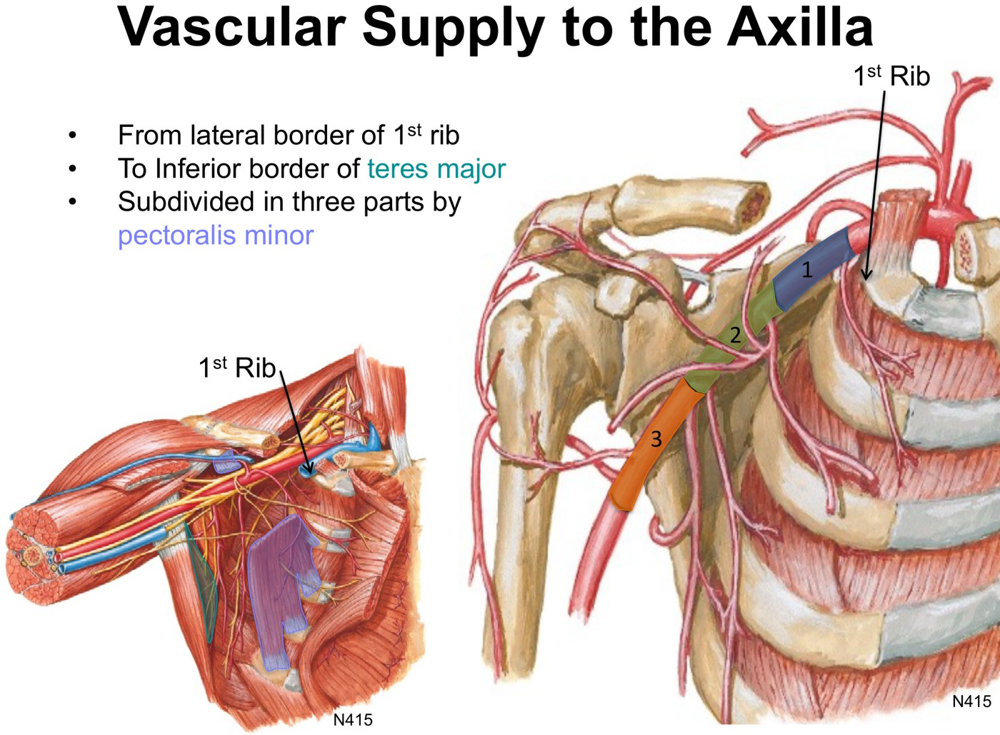
Three parts around pec minor. Slide from the deck.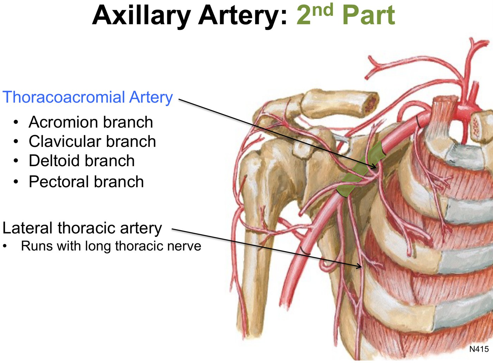
2nd part. Slide from the deck.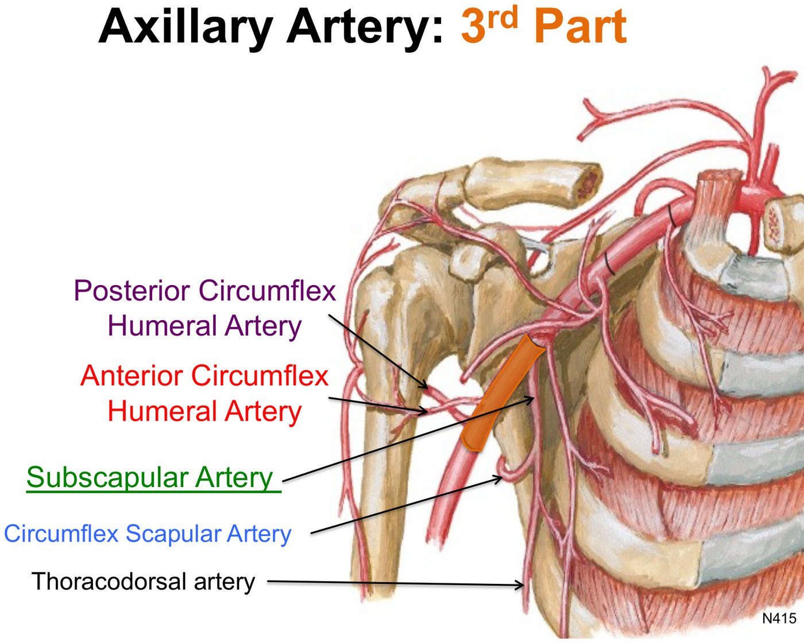
3rd part. Slide from the deck.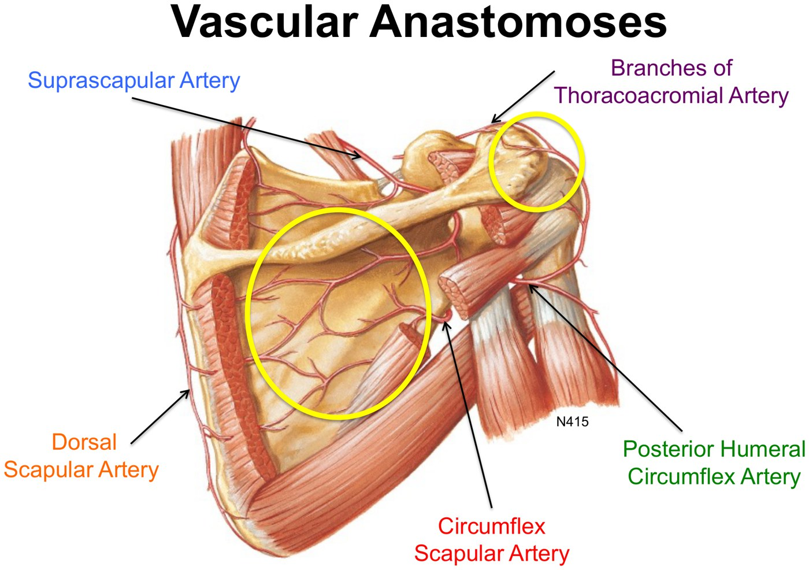
Some positions temporarily kink a vessel. Sleep for hours with your arm above your head and the vessels on the upper side can be occluded, but the collateral network keeps the whole joint supplied. Dr. Martin: you don't need the names of all these branches, just that they exist and what they do. The same goes for the collateral network round the elbow.
The cords of the brachial plexus are named for where they sit around the axillary artery: lateral, medial and posterior. In the lab this is around its 2nd part, behind pec minor.
The Brachial Artery
It continues from the axillary artery below teres major and runs down the arm medial to biceps and in front of coracobrachialis and brachialis, ending in the cubital fossa as the radial and ulnar arteries.
| Branch | Where it goes |
|---|---|
| Profunda brachii (deep artery of the arm) | Behind the humerus in the radial groove, with the radial nerve, deep to a head of triceps, to supply the posterior compartment. Near the elbow it becomes the radial collateral artery. |
| Superior and inferior ulnar collateral | The collateral network round the elbow |
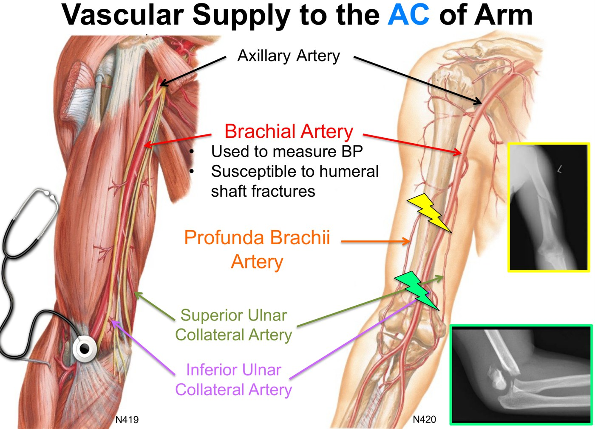
Brachial artery: BP and the two fracture sites. Slide from the deck.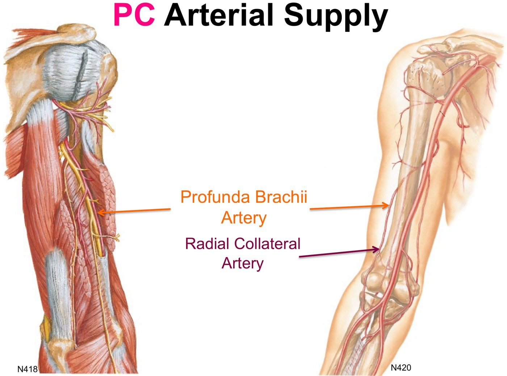
Profunda brachii to the posterior compartment. Slide from the deck.Blood pressure: the cuff around the arm compresses the brachial artery, and the stethoscope listens over it in the cubital fossa.
Fractures: the brachial artery lies against the medial humeral shaft, so a mid-shaft or supracondylar fracture can injure it. The profunda brachii is stuck to the humerus in the radial groove, so a mid-shaft fracture threatens it too.
Venous Return
Blood starts in the dorsal venous network of the hand and climbs the limb in superficial veins. Communicating veins shunt it into the deep veins, away from the skin.
| Vein | Course | Note |
|---|---|---|
| Cephalic | Lateral forearm and arm → deltopectoral triangle (between deltoid and pec major) → pierces the clavipectoral fascia → axillary vein | The triangle is where you'll first find it in the lab; preserve it down the arm |
| Basilic | Medial forearm and lower arm; dives deep about halfway up the arm to join the brachial veins, forming the axillary vein | |
| Median cubital | Crosses the cubital fossa obliquely, joining cephalic and basilic | Blood draws and IV access: superficial, under thin skin |
| Deep veins | Paired, running with the major arteries (the brachial artery's are the venae comitantes) | Removed from the field in the lab once identified |
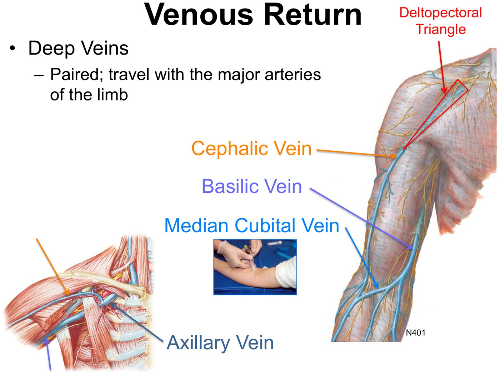
Knowledge checks
Which part of the brachial plexus is named for its position around the axillary artery? → the cords.
A film character cuts her arm near the elbow on a toxic bush, and the infection tracks up the lateral arm along the large cutaneous vein. Which vein? → the cephalic (basilic is medial; brachial is deep; median cubital stays in the cubital fossa).
Nerve Supply
Dr. Martin's second recording, with the lab tips she gives in it.
The Pectoral Girdle: Nerves Travel With Arteries
| Nerve | Travels with | Supplies |
|---|---|---|
| Suprascapular | Suprascapular artery | Supraspinatus, infraspinatus |
| Dorsal scapular | Dorsal scapular artery | Rhomboids |
| Long thoracic | Lateral thoracic artery | Serratus anterior |
| Thoracodorsal (middle subscapular) | Thoracodorsal artery | Latissimus dorsi |
| Axillary | Posterior circumflex humeral artery | Deltoid, teres minor; skin over the deltoid |
| Upper and lower subscapular | Subscapularis (both); teres major (lower) | |
| Medial and lateral pectoral | Pectoralis major and minor |
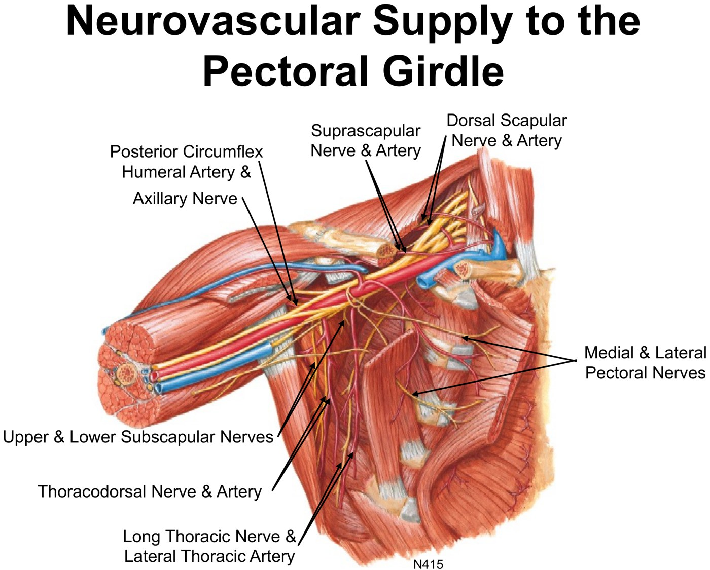
The pectoral girdle: nerve–artery pairs. Slide from the deck (Netter).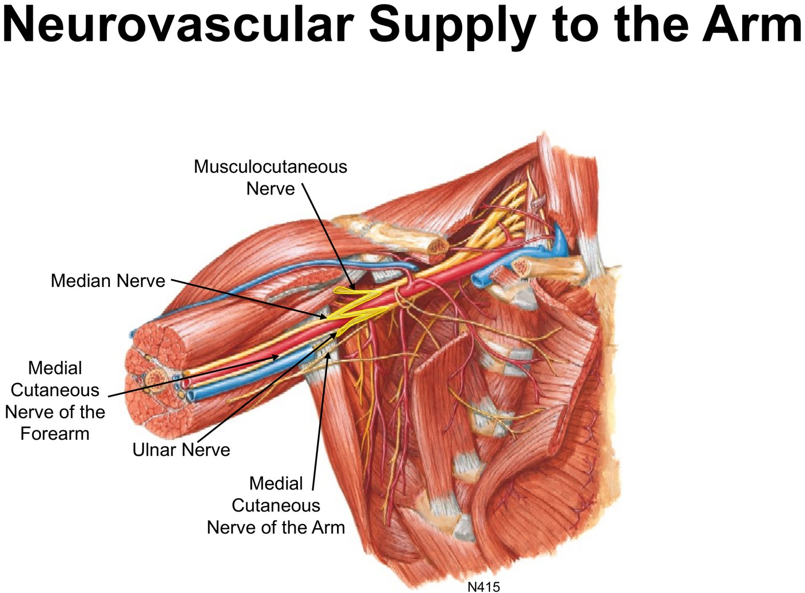
The “M” and the two small medial cutaneous nerves. Slide from the deck (Netter).Find the “M” first. Lateral leg = musculocutaneous (short, dives straight into coracobrachialis). Middle = median (from both cords; stays midline). Medial leg = ulnar (dives behind the basilic vein).
Don't mistake the cutaneous nerves for the ulnar. The medial cutaneous nerves of the forearm and the arm run right beside it and leave the medial cord higher up (the arm's highest). They're smaller and go into the skin, so they come away when the skin is reflected. You need their territories and their cord, but won't have to identify them in the lab.
The posterior cord is hidden behind the axillary artery. On the lab exam the whole M and the artery will be pulled aside and pinned, showing the posterior cord splitting into axillary and radial.
Nerves of the Arm
| Nerve (roots) | From | Course in the arm | Supplies in the arm |
|---|---|---|---|
| Musculocutaneous (C5, 6, 7) | Lateral cord | Pierces coracobrachialis, runs between biceps and brachialis, reappears lateral to biceps as the lateral cutaneous nerve of the forearm | All three anterior muscles |
| Median (C5–T1) | Lateral + medial cords | With the brachial artery: lateral to it, then crossing to its medial side mid-arm; in the cubital fossa, deep to the bicipital aponeurosis and the median cubital vein | Nothing |
| Ulnar (C8, T1) | Medial cord | Medial arm; about mid-shaft it pierces the medial intermuscular septum into the posterior compartment, then passes behind the medial epicondyle | Nothing |
| Radial (C5–T1) | Posterior cord | Enters behind the brachial artery, medial to the humerus, in front of the long head of triceps; runs in the radial (spiral) groove with the profunda brachii, under the lateral head; pierces the lateral intermuscular septum and comes forward between brachialis and brachioradialis | All of the posterior compartment (triceps), no exceptions |
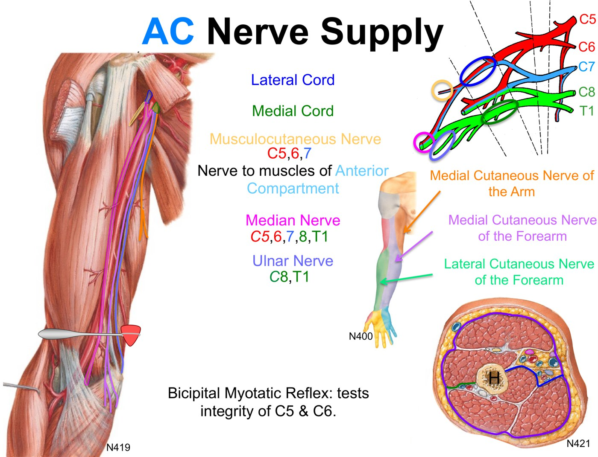
Anterior compartment nerves. Slide from the deck.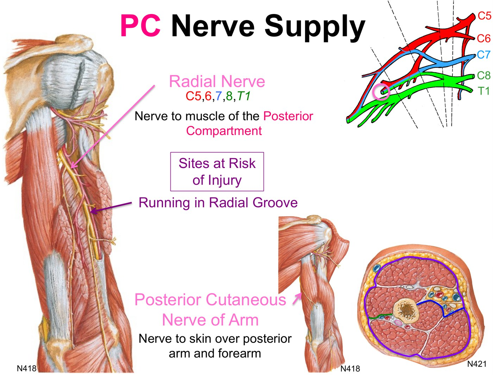
Posterior compartment: the radial nerve in its groove. Slide from the deck.Biceps reflex: tap the biceps tendon and it should give an involuntary contraction. A normal response confirms the C5 and C6 segments. Excessive, diminished or prolonged responses suggest central or peripheral nervous system disease and need more testing.
Mid-shaft humeral fracture: the radial nerve and profunda brachii lie on the bone in the radial groove. First concern: bleeding. Second: radial nerve damage.
Cutaneous Nerve Supply
| Nerve | Branch of | Skin |
|---|---|---|
| Axillary | Posterior cord | Over the deltoid: the “sergeant's patch”, where a sergeant's stripes sit |
| Medial cutaneous nerve of the arm | Medial cord | Small patch on the proximal medial arm (and axilla) |
| Posterior cutaneous nerve of the arm | Radial nerve | Mainly the posterior arm, a little laterally; it wraps round the medial side of triceps |
| Medial cutaneous nerve of the forearm | Medial cord | Anterior and medial forearm |
| Lateral cutaneous nerve of the forearm | Musculocutaneous | Lateral forearm |
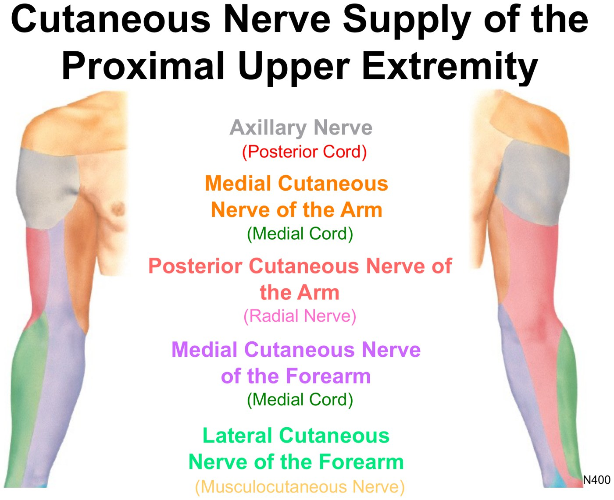
Peripheral nerve vs spinal level. Testing a nerve's skin territory tests several spinal levels at once. To test one level on its own, use the dermatome test sites on the last slide: C5 lateral arm below the deltoid, C6 thumb, C7 middle finger, C8 little finger, T1 medial elbow. The slide marks C7 on the index finger, but Dr. Martin says most examiners use the middle finger.
Knowledge checks
Nerve → a muscle it supplies (letters on the brachial plexus diagram): brachialis → musculocutaneous (D); deltoid → axillary (G); triceps → radial (H); serratus anterior → long thoracic (O).
Which nerve does each skin region test? Grey = axillary; dark orange = medial cutaneous nerve of the arm; pink = posterior cutaneous nerve of the arm; purple = medial cutaneous nerve of the forearm; green = lateral cutaneous nerve of the forearm.
Clinical Approach to the Upper Extremity Quiz
The module's 10-question quiz on the shoulder, with its answer key and feedback.
The Quiz, Worked
Two patients, two sets of questions. It pulls together Week 7's shoulder joints, rotator cuff disease and the axillary nerve. The x-rays are described rather than shown.
| # | Question | Answer | Why |
|---|---|---|---|
| A 26-year-old falls off his bicycle onto his shoulder | |||
| 1 | The x-ray: which structures are injured? | Acromioclavicular ligaments | A grade 3 AC separation: the AC and coracoclavicular ligaments are torn. No GH dislocation, and cuff pathology is uncommon at 26. |
| 2 | Initial treatment? | Sling with early range of motion | Trials show a sling works as well as surgical stabilization, without the risks of surgery. Surgery is for AC separations with greater displacement. |
| A 47-year-old woman with one month of shoulder pain | |||
| 3 | Can't sleep on it; hurts to elevate; active forward elevation 90°, external rotation 10°, internal rotation to the buttock; passive ≈ active; cuff testing too painful. Differential? | Osteoarthritis and adhesive capsulitis | Only these two restrict both active and passive motion. OA builds over months to years; adhesive capsulitis over weeks to months. Calcific tendinitis and cuff syndrome reduce active motion only. Septic arthritis restricts both but comes on in hours to days. |
| 4 | Best imaging? | X-rays | They show calcific tendinitis and OA cheaply, and adhesive capsulitis has a normal x-ray. A bone scan is non-specific; a WBC scan looks for infection; MRI and CT add cost without adding much. |
| 5 | Her x-rays are normal. Which disorder commonly goes with her condition? | Diabetes mellitus | A normal x-ray supports adhesive capsulitis. Diabetes is its most common association, and diabetics recover less completely. |
| A 64-year-old falls from a ladder cleaning eavestroughs | |||
| 6 | Shoulder pain, can't move the arm; ABCs fine. X-rays? | Anterior shoulder dislocation | The most common direction of traumatic instability. The axillary view shows the direction. There's also a large Hill-Sachs lesion. |
| 7 | After closed reduction: numb lateral upper arm, can't elevate, deltoid absent, biceps and infraspinatus present. | Axillary nerve injury | Musculocutaneous would weaken biceps and numb the lateral forearm. A C5 root lesion would also weaken biceps and infraspinatus. C6 numbs the lateral forearm. A cuff tear causes no sensory change. |
| 8 | 6 months on: sensation back, pain less, but poor overhead function; active ≈ half of passive. | Rotator cuff tear | Post-traumatic arthritis, chronic dislocation and adhesive capsulitis restrict passive motion too. An axillary neurapraxia would still have sensory and deltoid changes. |
| 9 | Ultrasound: full-thickness supraspinatus defect, 1 × 2 cm. Preferred treatment? | Physiotherapy | Cuff tears are common after dislocation at this age, and 75% resolve with physio alone. A minority need injection or surgery. Replacement isn't indicated for a normal joint; open reduction isn't needed for a reduced one. |
| Imaging | |||
| 10 | Which x-ray findings indicate osteoarthritis? | Osteophytes, eccentric joint-space narrowing, subchondral sclerosis | Not periarticular erosions, osteopenia or concentric narrowing: those are inflammatory-arthritis findings. |
Built from Dr. Charys Martin's “Neurovascular Supply of the Proximal Upper Extremity” module: the vascular and nerve recordings, their knowledge checks, the end-of-module quiz with its answer key and feedback, the 19-slide detailed deck, the mini-text, and the Proximal Upper Extremity lab guide (its cephalic, basilic and radial-nerve details). Discrepancies flagged: the mini-text says the axillary artery is divided by pectoralis major; the slides say minor, which is correct and followed. It gives the ulnar nerve C7, C8, T1; the slides give C8, T1, which is followed. It labels the musculocutaneous branch to the lateral forearm the “lateral cutaneous nerve of the arm”; it's the lateral cutaneous nerve of the forearm. It gives the medial cutaneous nerve of the arm C8–T2; the Brachial Plexus slide says T1. On the dermatome slide C7 sits on the index finger; Dr. Martin says most examiners use the middle finger. Caption corrections: teres major (“Terry's major”), cubital fossa (“cubicle”, “orbital”, “cubano” fossa), supracondylar (“super cannula ridge”, “super conjola”), cephalic vein (“phallic”, “symbolic” vein), deltopectoral (“delta pectoral”), basilic (“basilica”, “basilisk”), median cubital (“median cubicle”), axillary region (“excellent region”), the axillary artery and nerve (“actually artery”, “actually nerve”), brachial artery (“breakout artery”), profunda brachii (“profunda brachial”, “profunda breakout”), musculocutaneous (“muscular cattiness”, “muscular continuous”), coracobrachialis (“cargo brachialis”), medial cord (“mediacore”), cutaneous (“continuous”), dermatomes (“Dermott Homes”), sergeant's patch (“Sargent's patch”) and an involuntary reflex contraction (the caption says “voluntary”).